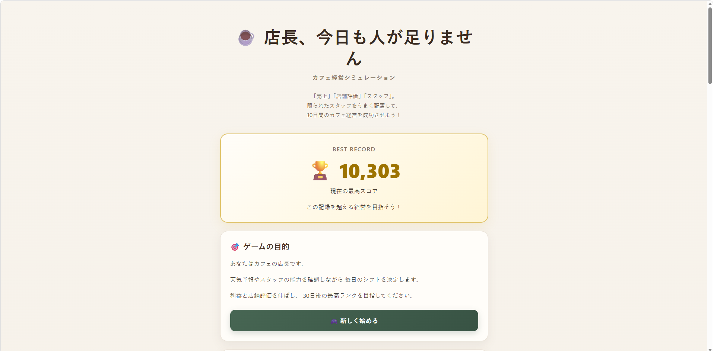
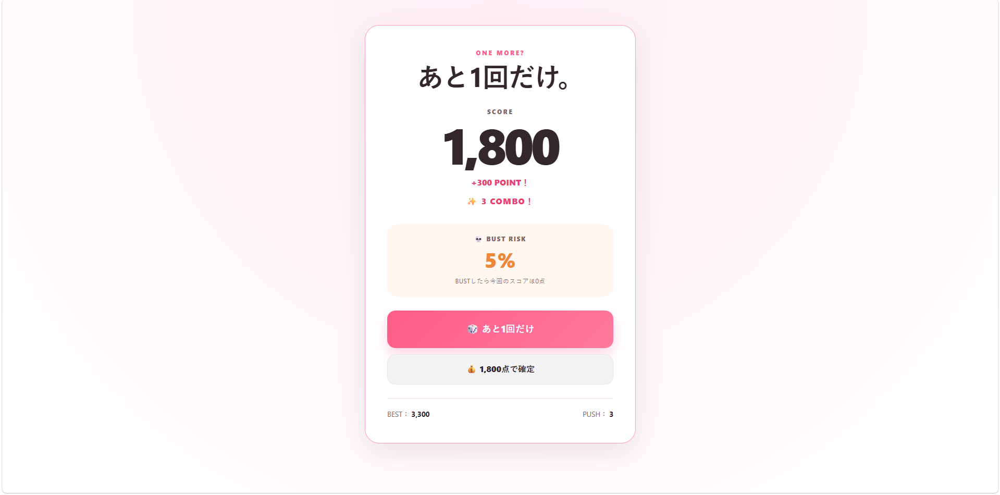
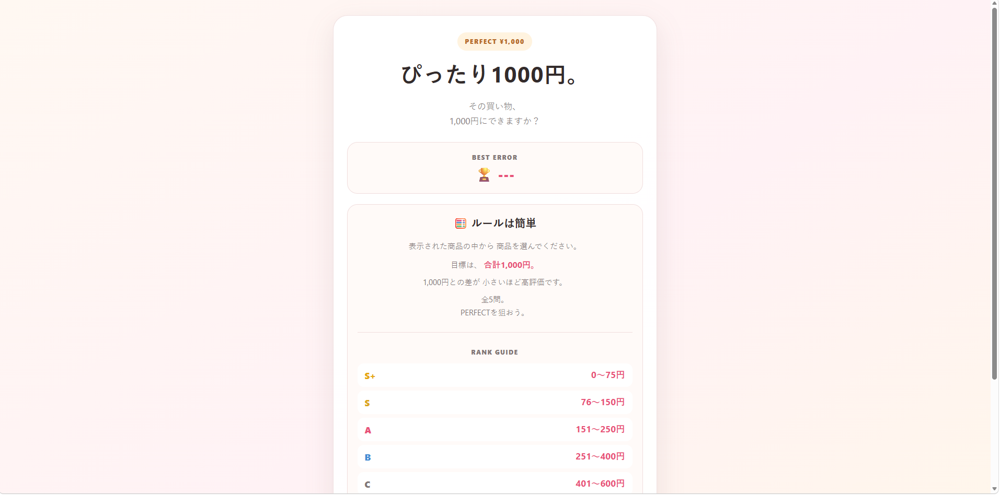
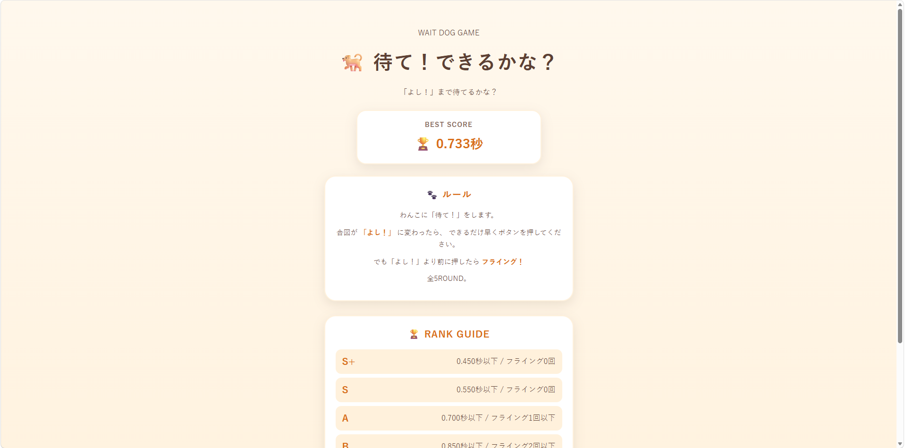
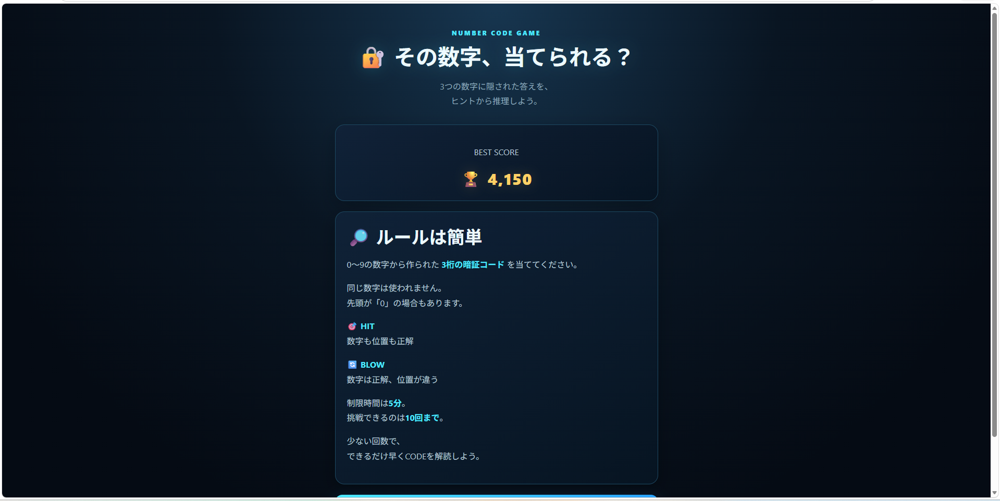
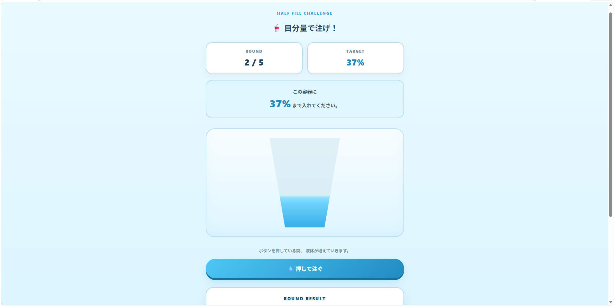
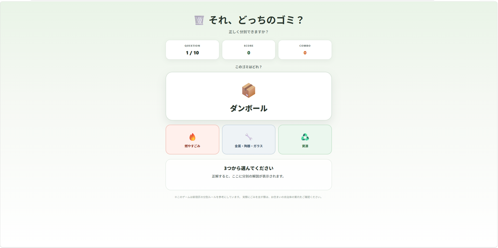

01

経営・シミュレーション
店長、今日も人が足りません
限られたスタッフをうまく配置して、 30日間のカフェ経営を成功させよう！
どんなゲーム？
あなたは人手不足のカフェの店長。 限られたスタッフを配置しながら、 30日間の営業を乗り切る経営シミュレーションです。
こんな人におすすめ
配置や経営を考えるゲームが好きな人、 短時間でちょっと頭を使って遊びたい人におすすめです。
5 MINUTE GAMES
ちょっと暇。じゃあ、5分だけ。

経営・シミュレーション
限られたスタッフをうまく配置して、 30日間のカフェ経営を成功させよう！
あなたは人手不足のカフェの店長。 限られたスタッフを配置しながら、 30日間の営業を乗り切る経営シミュレーションです。
配置や経営を考えるゲームが好きな人、 短時間でちょっと頭を使って遊びたい人におすすめです。

運・チキンレース
押せばポイント獲得。 でもBUSTしたら今回のスコアは0点。 どこでやめるかは、あなた次第。
「もう1回」を続けるか、ここでやめるか。 運と欲張りすぎない判断が試される、 短時間で遊べるゲームです。
運試しが好きな人や、 ギリギリまで攻める駆け引きを 手軽に楽しみたい人におすすめです。

計算・組み合わせ
商品を選んで合計1,000円を目指そう。 1,000円との差が小さいほど高評価。 全5問、PERFECTを狙おう！
商品を選んで合計金額を調整し、 ぴったり1000円を目指すゲームです。 シンプルな計算と選択で目標金額に近づけます。
数字や計算を使ったゲームが好きな人、 短時間でちょっと頭を使って 遊びたい人におすすめです。

反射神経・タイミング
「よし！」が出たらすぐタップ。 フェイントに引っかかるとフライング！ 全5ROUND、飼い主ランクS+を目指そう。
合図をよく見ながらタイミングを判断する、 シンプルな反応ゲームです。 ついもう一度挑戦したくなる遊びを目指しました。
反射神経を使うゲームが好きな人や、 説明を覚えなくてもすぐ遊べるゲームを 楽しみたい人におすすめです。

推理・ロジック
HITとBLOWのヒントを頼りに、 隠された3桁のCODEを解読しよう！
0〜9から作られた重複なしの3桁CODEを、 HITとBLOWのヒントから推理するゲームです。 制限時間は5分、挑戦できるのは10回まで。
数字を使った推理やロジックゲームが好きな人、 ヒントを整理しながら答えを絞り込むのが 好きな人におすすめです。

目測・感覚
その目分量、本当に合ってる？ TARGETを狙って、グラスにぴったり注ごう！
指定されたTARGETを目指して、 ボタンを押している間だけグラスに液体を注ぐゲームです。 容器の形によって、液面の高さと実際の容量が変わります。
目分量や感覚に自信がある人、 シンプルだけど意外と難しいゲームに 挑戦したい人におすすめです。

分別・学習
これって燃やす？ 資源？ 100種類のゴミから出題される分別ゲーム！
表示されたゴミを、 「燃やすごみ」 「金属・陶器・ガラス」 「資源」の3つから選んで分別します。 1プレイ全10問です。
ゴミの分別をゲーム感覚で覚えたい人や、 普段の分別知識を試してみたい人におすすめです。 連続正解でCOMBOも狙えます。
NEXT GAME
次の「5分」を準備中。 次はどんなゲームになる？
ABOUT
ちょっと暇。じゃあ、5分だけ。
説明を読んですぐ遊べて、 5分くらいでひと区切り。
でも、終わったら 「もう1回」と思える。
経営、運、計算、反射神経。 毎回ちがう遊びを、 小さなWebゲームにしています。
WEB GAME DEVELOPMENT
オリジナルWebゲームの制作を受付中です。
クイズ、診断、学習ゲーム、PR・販促、 イベント向けゲームなど、 ブラウザで遊べるWebゲームを制作します。
「こんなゲームを作ってみたい」という アイデア段階からでもご相談いただけます。